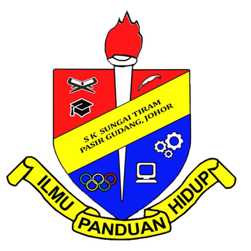

SK Sungai Tiram · Menyambungkan portal ke Google Sheet melalui Apps Script.
PWA boleh dipasang, tetapi carian murid mesti menggunakan internet untuk mendapatkan data terkini. Tiada data perubatan atau kad pengenalan disimpan secara luar talian.